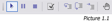
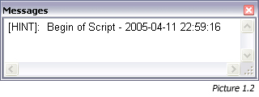
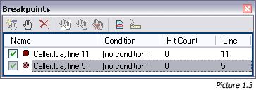
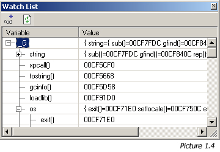

Debugging is long and difficult task to do. It is also a crucial state in programming project because
this task have to be well done in order to bring a project successful. LuaEdit provides servaral tools
to get this *painful* task done as easy as possible. This section will explain the basic actions to debug
scripts with LuaEdit.
Basics
First of all, you must press the "Run" (F5) button on the "Debug Toolbar" (Picture 1.1) or by using the menu "Run/Run Script"
in order to get into a debug session. This will load the script into a "Lua State" (See Lua 5.0 documentation
available through the menu "?/Lua Help") and execute each valid line of you script until it reaches the end or a
valid breakpoint (See documentation below for more informations about breakpoints). If an error happened while running
the script, LuaEdit will display the message through a message box and through the "Messages Window" (Picture 1.2).
Several debugging informations are available, once the script execution breaks on a line. Local and Global variables
values are available through the "Local Variables Window" and the "Global Variables Window". Also, the "Lua Stack Window"
shows all Lua's stacked variables values at the moment of the current execution and the "Call Stack Window" shows the
history of all function calls made from the current script. This call stack may be useful to trace back the values of the
local and global variables in previous calls.
Step by Step

A few choices are available to pursue the execution of the script. The "Step Over" (F10) and "Step Into" (F11) buttons allows
to jump the function call of the current debugging line if any. If "Step into" is pressed and no function call is made on the
current debugging line, the debugger will simulate the "Step Over" feature wich simply jump to the next executed line. The
"Run Script to Cursor" (Ctrl+F10) button will run the script until it reaches the line where cursor is currently positioned
or until the end of the script. The "Run" (F5) button will pursue the execution of the scipt if already started.
Manipulating Breakpoints
Breakpoins are very useful when debugging. To insert a breakpoint at the line where the cursor is, press the "Toggle Breakpoint"
(F9) button from the debug toolbar (Picture 1.2). When debugging a script, the execution should break on a line where a breakpoint

has been detected. Advanced manipulation and features for breakpoint are available through the "Breakpoints Window" (Picture 1.3)
such as disabling/enabling breakpoints. A disabled breakpoint won't break the execution of the script but will leave the breakpoint marker
(maroon/grayed) on the code editor. To disable/enable a breakpoint, simply check/uncheck the checkbox on the left of the breakpoint name
in the "Breakpoints Window". You can also set a condition on a breakpoint wich will be evaluated when the scipt is runnning
to determine whether or not it will break on this breakpoint. The evaluation of the condition should always return "true" or "false".
You can also remove, add and goto breakpoints through the "Breakpoints Window".

Watching Variables
In Lua, just like other languages, variables are very important for the code to be working. Variables in programming are abstract concept
since they are located in the RAM and that their content may change several times in a few operations. That's why the "Watch" window (Picture 1.4)
becomes a useful tool for the programmer. Since Lua logic is based on tables, LuaEdit has adapted a watch window wich act like the MS Visual Studio .Net®
one. This means that all the content of any tables (variables and nested tables) can be explored in a hierarchic way. This can be extremely useful when
complex tables are part of your code. The watch window also display regular variables content.
NOTE: Any complex data such as user data and functions will be displayed as a pointer address. See picture 1.4 for details.
Using the Initializer
LuaEdit offer the possibility to bind the code to a Dynamic-Link Library (DLL) before the execution of the script. This can be very useful
if any function call in the scripts refer to some C++ functions defined in such a file. By using the initializer, you will prevent error
raised by Lua 5.0 because it can't find the reference of the function call. To set the initializer, just popup the "Project Options Window"
by clicking on the "Project/Options..." menu. Once the windowis displayed, select the "Debug" tab and enter the full path of the DLL or simply
click on the browse button and open the DLL from the browse dialog. In order to make this feature working your DLL must export a function of
one of these prototype according to the right language it has been built from:
- Delphi: LuaDebug_Initializer(L: PLua_State): Integer; cdecl;
- C/C++: int LuaDebug_Initializer(lua_State *L);
NOTE: The initializer property is only available when the unit is part of a project.
Using LuaEditDebug.dll
LuaEdit has been compiled and adapted into a Dynamic-Link Library (DLL) file. This now allowing embedded lua code in executable files (EXE)
to be debug in LuaEdit. First of all, in order to use it, the lua state structure must be opened AND closed by the dll. To do so, here are
the two function prototypes to declare in your application code:
- Delphi:
- function LuaEditDebugOpen: Plua_State; // Function to open the lua_state structure with LuaEdit
- procedure LuaEditDebugClose(LuaState: Plua_State); // Function to close the lua_state structure with LuaEdit
- C/C++:
- lua_State *LuaEditDebugOpen(void); // Function to open the lua_state structure with LuaEdit
- void LuaEditDebugClose(lua_State *LuaState); // Function to close the lua_state structure with LuaEdit
By calling the LuaEditDebugOpen function, LuaEdit will perform a call to the lua_open Lua API function and return the state as a pointer. By calling the LuaEditDebugClose function, LuaEdit will perform
a call to the lua_close Lua API function. Make sure that only LuaEdit is opening AND closing the state structure. If you intend to use LuaEdit for this purpose, your application should never open or close
the state. To begin the debug session in LuaEdit, two way are available. The first one is by specifying a file name and the second one is by giving the lua code. Once called, both functions will immediately
start debuging the code in LuaEdit. Here are their prototypes:
- Delphi:
- function LuaEditDebugStart(LuaState: Plua_State; Code: PChar): Integer;
- function LuaEditDebugStartFile(LState: Plua_State; Filename: PChar): Integer;
- C/C++:
- int LuaEditDebugStart(lua_State *LuaState, char *Code);
- int LuaEditDebugStartFile(lua_State *LState, char *Filename);
|